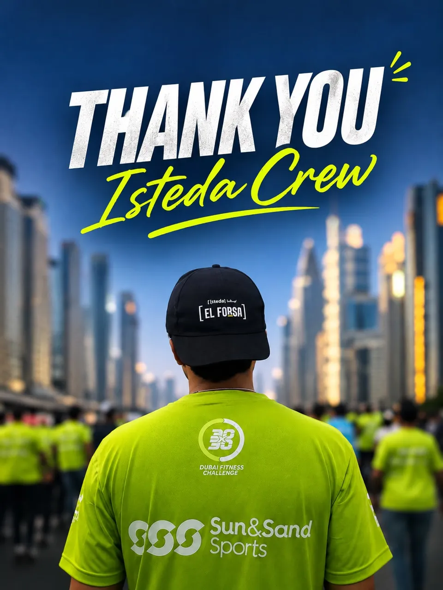

RunAlong 2026 · Event finished
Thank you,RunAlong crew!
What a morning on Sheikh Zayed Road! From spotting an EL FORSA wristband in the crowd to pulling new friends into a PhotoRun selfie, you guys made those 5 km fly by.
Thanks for running with us. See you at the next one! ❤️
ISTEDA × EL FORSA
PhotoRun scoreboard
PhotoRun rankings
| Position | Name | Score | Challenges completed |
|---|
